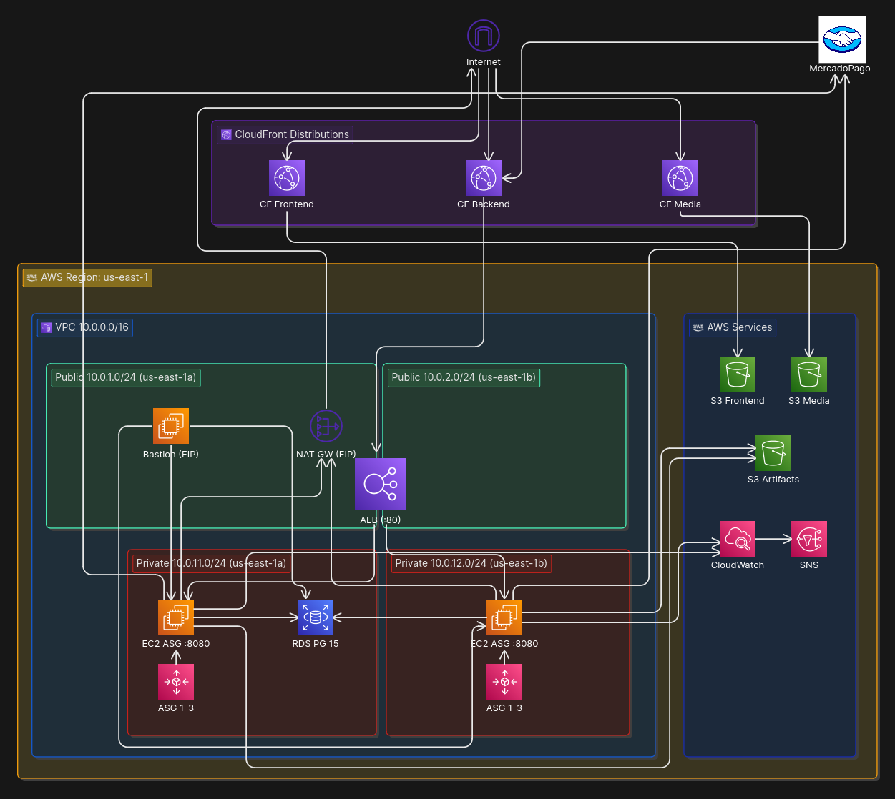

| Criterio | PostgreSQL 15 ✓ | DynamoDB | Redis |
|---|---|---|---|
| Tipo | Relacional ACID | NoSQL key-value / doc | In-memory key-value |
| JOINs | Nativo | No — requiere denorm. | No |
| Consistencia | ACID fuerte | Eventual (configurable) | Eventual |
| Escalado | Vertical | Horizontal automático | Horizontal |
| ORM / JPA | Spring Data JPA nativo | Integración manual | No aplica |
| ¿Por qué no? | — Elegido ✓ | Denorm. costosa con datos relacionales | Quota sandbox; JWT elimina sesiones |
ecom-s3-artifactsecom-frontend-*ecom-media-*!ImportValueecom-{recurso}-{env} · ej: ecom-alb-prod